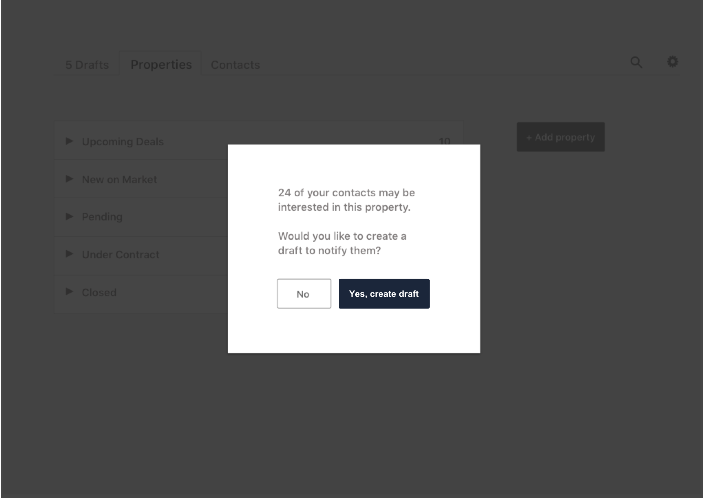

PINECONE LABS
We grow the seeds of your ideas into fruitful software.
While running our StereoPoster startup, I began to bring in consulting projects to continue funding our operations. Due to the complexity and success of these projects, we transitioned into a full time software and development agency in 2016.
With 10 years experience bringing together product design, agile development for mobile and web platforms, and startup best practices, we've been able to craft impactful solutions for a wide range of client needs. Whether developing business efficiency and marketing tools for commercial real estate brokers, tools to manage international teams of medical device sales representatives and make them more effective in the field, or consumer apps to help people plan events and group travel, our process is the same:- Conduct customer development and product discovery interviews to pinpoint the key pain points that we need to address.
- Brainstorm the simplest, most direct solutions or minimum viable products that will generate meaningful value and insights with minimal expense of time and capital.
- Iterate rapidly through a cycle of build > measure > learn to zero in on solutions that successfully drive the metrics of highest priority to our clients.
My Roles
I act as the account manager, co-lead designer, and product manager. I lead meetings with our clients' management teams to determine their needs; draft proposals; conduct user research including competitive analysis and client interviews; create personas, wireframes, and visual designs; and manage development with our engineering team.
Sample Work
TriMed, a leading developer and distributor of orthopedic implants designed to treat musculoskeletal injuries, sells its products in operating rooms across the world. TriMed's sales representatives often accompany surgeons in the operating room to advise them on the proper use of the company's products during surgery. It is extremely important for the rep to have immediate access to instructional materials for each product to ensure the procedure goes smoothly.
We were hired to design and build a mobile app for iOS/Android that would provide TriMed's sales reps with quick and ready access to product specification and educational materials including instructional manuals and videos demonstrating surgical procedures, as well as marketing brochures, price sheets, and order forms. It was essential that reps could use the app to find the appropriate materials within seconds.
Through our interviews with TriMed's sales reps and management team, we determined that the app must be immediately intuitive and minimize downtime due to poor internet connectivity. We could not rely on wifi or cell reception that can be spotty in operating rooms.
To ensure that reps could navigate the app effortlessly, we rapidly iterated on rough wireframes and semi-functional prototypes, user testing with reps along the way to collect feedback and find the winning layout.
To prevent any downtime due to poor internet connectivity, we implemented a toggle at the top of each product page allowing reps to download materials they would likely need in advance of their sessions.
We worked TriMed's logo, colors, and product illustrations into the design of the app to reinforce the company's brand, with a white background and a gradient of grays making up the core color scheme to reflect the sterile environments where sales meetings take place.
Play with a semi-functional prototype:
Play with a semi-functional prototype here.
Results
TriMed was pleased with the work, saying we did an "awesome job" and that the designs are "very clean" and "cohesive with their brand."
The Mansour Group of Marcus & Millichap, who sell over a billion dollars of commercial real estate annually, brought us in to design internal software tools to make their operations more efficient. Competing real estate brokerage firms were employing much larger rosters, and The Mansour Group wanted to maintain their edge while keeping their headcount low.
The Mansour Group's business is driven by timely communication with a large number of prospective buyers and sellers of commercial real estate. As soon as the marketing team sells a property, the business development team needs to notify owners of similar properties to show what result they can expect if they grant TMG a listing agreement. When the business development team lands a new contract, the marketing team needs to notify buyers who have expressed interest in similar properties before their needs are met by another opportunity.
By shadowing the heads of the marketing and business development divisions, we learned that each group communicated their successes to the other through weekly spreadsheets that are created manually and are difficult to digest. Further, we found they were relying on a patchwork of siloed software services for updating property webpages, sending marketing messages, and managing client relationships, forcing them to enter redundant data in multiple locations and manually compile information for marketing messages. Struggling to keep up, they were neglecting to reach out to leads with timely information that would help land contracts, and they often sent duplicate messages which they felt hurt their brand.
We designed a sales pipeline tool that would automatically alert team members as properties moved through each stage and would facilitate the resulting action steps. Our tool would minimize information gaps between team members, eliminate hours of manual effort, alleviate cognitive stress, and make outgoing marketing efforts more punctual and accurate.
Our pipeline makes it dead simple to maintain a birds-eye view of the status of TMG's properties.
Adding a property takes a few seconds...
...and automatically creates draft marketing emails addressed to buyers who have expressed interest in similar properties.

The brokers can simply review the drafts created by the system, modify any wording they like, and fire them off.

Our task analysis of their existing email marketing workflow.
Our task analysis of their email marketing workflow after implementing our solution.
Results
TMG approved our designs, calling them "very helpful and intuitive." They were eager to put our solution into action, as they were confident it would make their work significantly easier and more effective.
International music event promoter and owner of one of the largest nightlife venues in the country, Cityfox commissioned us to design and build an exclusive invite-only app for purchasing tickets to events at their 7,000 capacity venue the Brooklyn Mirage in Bushwick. Cityfox's parties had grown so popular that they felt at risk of losing the strong sense of community that had kept their core audience coming back week after week. Our app would allow Cityfox to curate their audiences at scale.
The Collective Visionnaire app we developed and launched for both iOS and Android is now the only way to buy tickets to the most in demand events Cityfox hosts each season. Members gain access to the app and the resulting community via paper invitations that provide their unique login credentials. Onboarding for the app prompts members to take a photo to create their "Visionnaire ID" — they must open the app and show this ID at the door to gain access to the venue.
We also built a web application for Cityfox's management to add events to the app.
The team was used to working with spreadsheets, so we enabled them to control which members would be able to buy tickets to each event by uploading a file of Comma Separated Values (CSV).
The team can also send custom messages to the community at any time and choose whether the messages will go out as text messages, mobile push notifications, or emails. Recipients can be all members, members invited to a specific event, or a custom group determined by an uploaded CSV file.
Results
Cityfox was thrilled that we completed the work on time and on budget. We got our app accepted into both Apple's App Store and the Google Play store in time to promote the season opening of The Brooklyn Mirage, and we successfully launched the app to thousands of members at once without a hitch.